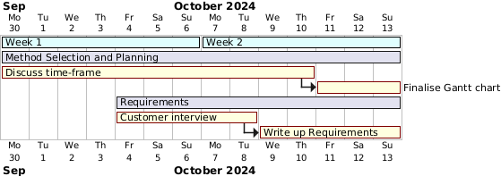
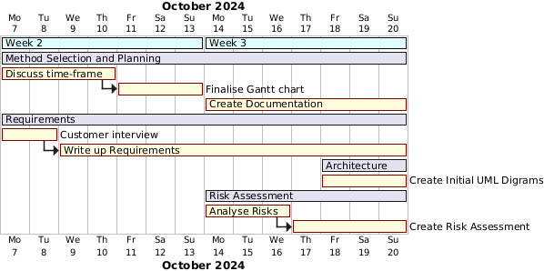
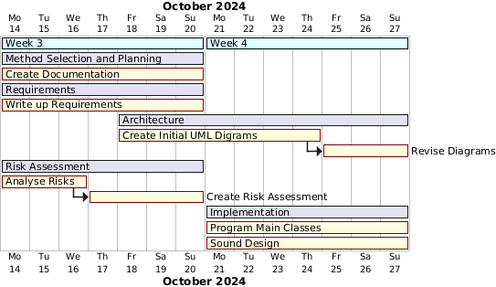
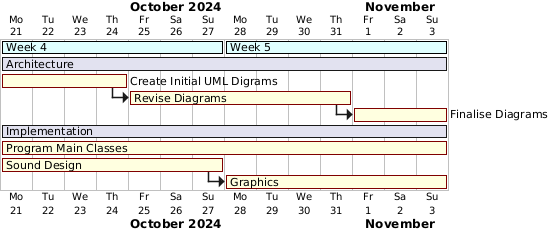
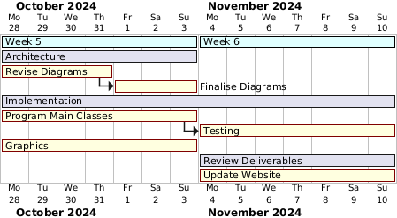

Week 1
During week 1 we sat down and discussed the project as a whole. After coming up with a basic plan for the game we created a spreadsheet to equaly distribute the work. On Friday's meeting we all came together to come up with a list of requirements and questions for our client in next weeks interview.
Week 1's Gantt chart
Week 2
During week 2 we finished off our interview questions and had our meeting with the client. Following this meeting we began work on our requirements. On Friday's meeting we discussed the timeframe of the whole project and started to create an initial gantt chart (pictured bellow) outlining when important tasks would start and finish.
Week 2's Gantt chart

Initial Gantt chart
Week 3
During week three, after our very insightful meeting with the client,
we could finally start on creating the requirements for our game.
We tried to get down all of the requirements as soon as possible so
that we could start implementing our game. By the end of week 3 we also
finalised the overview of our project timeline gantt chart.

Week 3's Gantt chart
Week 4
During week 4 we realised that we may have needed a bit more time to finalise the requirements and so we kept developing them through to the end of the week. During this week we also worked on the risk assessment and began working on designing our games architecture.
Week 4's Gantt chart
Week 5
During week 5 we started implementing the game. We started a little later than we would have liked to, however we had to make sure that we were concrete with our design ideas and initial architecture before we could start programming. During this week we also continued working on the architecture document, a bunch of team members developing the game, whilst the rest of the team would be designing the next steps that had to be implemented. Whilst working on the coding, we also started work on the assets of the game. We started to design both the background tiles and the building textures that would be used in the game. We also started work on creating music and sound effects for the game at around the same time.
Week 5's Gantt chart
Consolidation Week
By consolidation week we were applying finishing touches to our architecture document which meant we were only left with coding and assets design left to do. During this week the majority of the game was implemented. During the coding process we made sure that we were constantly referencing the architecture document and evolving our design document to fit our requirements. We went through a couple of iterations of the structural class diagram, and finally settled on a configuration that worked well.
Week 6
During week 6 the majority of the game had been coded, the only thing that was left now was to go through the game thoroughly and uncover any bugs that may have crept in. We did end up running into a window resizing issue, which meant that whenever we tried placing down buildings sometimes the mouse would be offset to the building texture on the screen, but after a day of brainstorming we managed to fix it.